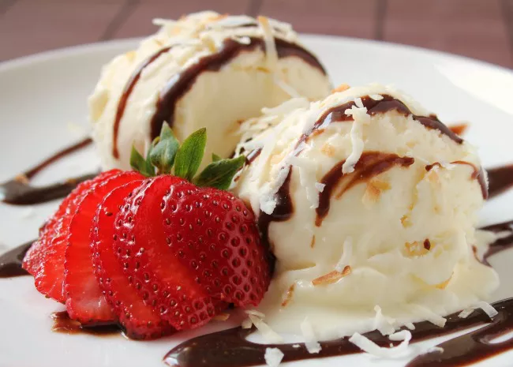

Ice Cream

Description
Homemade ice cream comes in two basic styles: Custard-style (also called French) and Philadelphia-style (also called New York or American).
- 8 egg yolks
- 1 cup granulated sugar, divided
- 1 cup heavy cream.
- 3 cups half-and-half
- 1 tablespoon vanilla extract
- In a medium bowl, whisk together the egg yolks and half of the sugar. Set aside.
- In a medium saucepan, stir together the cream, half-and-half, salt, and remaining sugar. Heat the mixture over medium-high heat, stirring often, until it comes to a simmer, then reduce heat to medium.
- Add about 1/2 cup of the cream mixture to the egg mixture while whisking constantly (this helps prevent the eggs from cooking). Repeat with another 1/2 cup of the cream mixture.
- Using a heatproof spatula, stir the cream mixture in the saucepan constantly as you pour the egg mixture into the pan.
- Cook, stirring constantly, until thickened and mixture coats the back of the spatula, 1 to 2 minutes longer. Remove from heat.